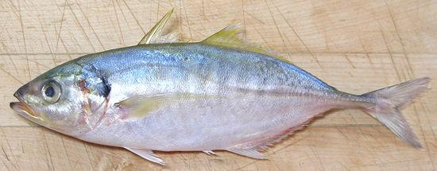

Yellowtail Scad

[Salay-salay (Philippine); Ca Ngan (Viet); Atule mate]
This Indo-Pacific fish is found from the east coast of Africa to Hawaii.
These fish can grow to nearly 12 inches, but the photo specimen was
9-1/4 inches and weighed 8 ounces. This is a minor commercial
catch and is IUCN Red Listed NE (Not Evaluated).
Yellowtail Horse Mackerel (Trachurus novaezelandiae) is
often confused with this fish, and visa versa, as they are related and
very similar. I have purchased Yellowtail Scad labeled Yellowtail
Mackerel. The main visible difference is the Horse Mackerel's lateral
line descendinb much more abruptly to the forward end of the scutes.
The instructions given here should work fine with the Yellowtail
Mackerel. That fish is found around New Zealand and southern Australia,
most used as bait, but also considered a good eating fish.
More on the Scad Family.
This is a delicious fish. My favorite way to eat it is fillets lightly
powdered with salted rice flour (needed to prevent sticking), pan fried
in olive pomace oil, and served with my usual
Lemon Wine Sauce
sauce. Note that the flesh, while extremely tender raw, becomes very
firm with any method of cooking. If you have very small fish, see
alternatives on our page for
Yellowstripe Scad.
Buying:
Like other scads, Yellowtail Scad is found
mostly in Philippine fish markets. Here in Los Angeles we have one of
those near every major hospital complex, because our health care system
runs mainly on Filipino immigrants. Other Asian markets may have them
in the freezer cases. The photo specimen was purchased at
a large Philippine market in Eagle Rock, for 2016 US $2.99 / pound.
Scales:
This fish has a modest number of very small
scales up at the head end. They scrape off easily with no flying around.
Scutes:
As with other "hard tail" fish, if you are
going to leave the skin on, you must remove the strip of hard
"scutes" along the lateral line near the tail. Make a shallow cut just
through the skin on each side of the scutes for the straight part of
the lateral line (the curved part is not a problem). Get the tip of
your fillet knife under the strip at the forward end. Pull it up as
you shave it off.
Cleaning:
Larger fish can be cleaned in the normal
manner. The gills are not hard to pull, but tend to break up - use
your long nose pliers. If you aren't cooking the fish head-on, cut
from the top of the head down behind the pectoral fin and around
under the chin. Cut through the backbone with your kitchen shears
and pull the head off. Cut the belly from the vent, forward to under
the chin, or where the head was if you cut it off. The body cavity
actually goes farther aft than the vent, but is not too deep to clean
out easily. Cut off the pelvic fins.
Fillet:
You can fillet this fish quite easily, as it
has a coherent, easy to follow bone structure. Remove the head and cut
off the tail. Make cuts on both sides of the anal fins from the tail end
forward to the body cavity. Cut down to the backbone, then over it at the
tail to meet the bottom cuts. When you get forward to the rib cage, for
small fish you can just pull the fillet off the ribs. For larger fish,
cut the ribs from the backbone with kitchen shears and pull them from
the fillet with long nose pliers. There are centerline pinbones that
should be pulled out straight forward for the length of the body cavity.
They are easy to find and easy to pull. Fillets are difficult to skin -
best to leave the skin on.
Skin:
The skin is thin and difficult to remove, and it's
about all that's holding the tender flesh together. It has significant
shrink but poor adhesion. If pan frying, when you flip it skin side down,
immediately (and gently) push the fillet flat with your turner
for a few seconds. It will remain flat. The skin is not much of a
problem with poaching either, though you may want to cut the fish in
half along the centerline.
Yield:
The 6-1/2 ounce scad in the top photo yielded
3.19 ounces of skin-on fillet (49%), a pretty decent yield for a small
fish, due to it's small head and light bones.I got about the same
yield from an 8-5/8 ounce fish.
Stock:
The head, bones and fins make a reasonably clear
stock which has a distinct but not unpleasant flavor and very moderate
oil. Use your gravy separator to remove the oil. For details see our
Making Fish Stock
recipe.
 This fish is also popular as Daing
(Philippine dried fish).
This fish is also popular as Daing
(Philippine dried fish).
sf_scadytz 06 r 160419 - www.clovegarden.com
©Andrew Grygus - agryg@clovegarden.com - Photos on this
page not otherwise credited are © cg1 -
Linking to and non-commercial use of this page permitted